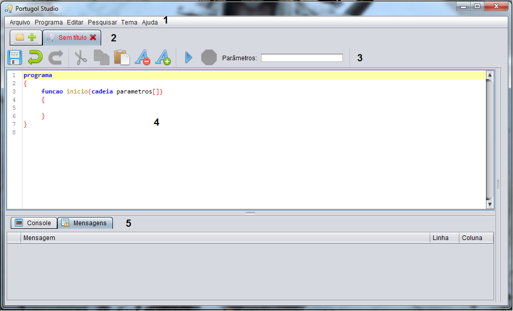
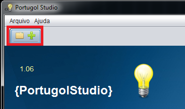
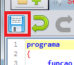
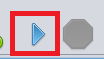
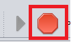

Nesta sessão, você aprenderá a criar novos projetos, abrilos, salvar-los, hotkeys, etc.
Conhecendo a Interface

A imagem apresentada acima mostra o ambiente de programação do PortugolStudio dividido por sessões numeradas de 1 a 5. Abaixo os detalhes delas:
1 - Barra Menu
- Arquivos - Aqui encontram-se as Opções Abrir, Salvar, Salvar Como, Fexar guia, Fexar todas as Guias, Sair
- Programa - Opções de Executar e Interromper o programa
- Editar - Opções como Desfazer, Refazer, Copiar e Colar
- Ajuda - Opções Sobre e Topico de Ajuda
2 - Barra de Guias
3 - Atalhos Rapidos
- Salvar
- Desfazer
- Refazer
- Recortar
- Copiar
- Colar
- Executar
- Interromper
4 - Ambiente de Programação
5 - Abas do Console e Mensagens
Para criar um novo projeto, clique no sinal "+" ao lado da pasta localizado na parte superior do programa

Você também pode clicar em Arquivo/ Novo, ou se preferir, utilize as teclas atalhos "Ctrl+N"
Para Salvar um Projeto, Clique no Disquete na parte superior do programa

Você pode também clicar em Arquivo/Salvar ou se preferir, Apertar "Ctrl+S"
Para Abrir um Projeto Existente, basta clicar na pasta ao lado do "+" localizado na parte superior do programa
Você também pode clicar em Arquivo/Abrir ou se preferir, Apertar "Ctrl+A"
Para compilar um projeto, basta clicar na Seta localizada na parte superior do programa

Você pode também clicar em Programa/Executar ou se preferir, apertar "Ctrl+E"
Em meio a execução do projeto, em alguns casos é necessário interromper o programa por vontade do usuario para fazer algumas modificações. No PortugolStudio isso é possivel clicando no Quadrado localizado na parte superior do programa

Você pode também clicar em Programa/Interromper ou se preferir, apertar "Ctrl+I"
Quando necessário, você pode retroceder alguma ação ou refazer no PortugolStudio. Para isso você pode clicar nas setas verdes localizadar na parte superior do programa
Você pode também utilizar o menu Editar/Refazer ou Desfazer ou apertando "Ctrl+Z" para desfazer ou "Ctrl+Y" para refazer